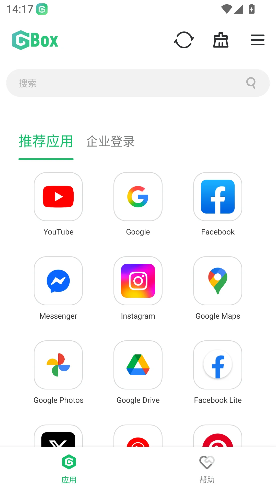

用 GBox 把华为手机接回 Google 生态——一套跑通 Gmail、Docs、YouTube 的日常工作流
我用 GBox 在 EMUI 14 上搭了一套完整的 Google 生态工作流，从邮件收发到文档协作再到离线观看，每个环节的衔接点和容易踩坑的地方都写在这里。
我是做海外业务的，工作邮箱在 Gmail，协作文档全在 Google Docs，偶尔还要查 YouTube 上的产品评测和技术教程。以前华为手机不支持 Google 服务这事，折腾了快一年才算摸出一条通顺的路。
旧流程的三个卡点
没装 GBox 之前，我是这么干的：
- 邮件用 QQ 邮箱代收 Gmail。好处是能收到，但附件经常不全——Google Drive 发过来的大附件 QQ 邮箱直接吞掉，要找只能开浏览器登 Gmail 网页版，推送还慢半拍，客户凌晨发的消息经常早上才看到。
- Google Docs 只能浏览器打开。网页版在手机上没法离线编辑，地铁里没信号的时候文档改到一半存不住，出了两次初稿丢失的事故之后彻底不敢在路上改文档了。
- YouTube 基本不看。华为视频的海外内容覆盖差，网页版加载又卡，干脆戒了——直到某个项目组要求全员看官方的 demo 视频，才又绕回来。
这三件事本质上是同一个问题：Google 生态在华为设备上没有运行环境，所有替代方案都是隔一层皮，用着总有哪不对。
从官方下载页面拿了 GBox 装上之后，这个问题才算解决。
用 GBox 搭的新流程
装了 GBox 之后，我把整个 Google 生态搬进了它的沙箱里。它的官网上定位也写得很清楚——就是沙箱，不搞别的。流程现在这样跑：
Gmail 收工作邮件 → GBox 里弹推送通知 → 直接点开回复或处理附件。附件下载到沙箱存储后，系统级分享菜单可以一键转到飞书文档、微信、或者华为的文件管理器，整个链条不用手动复制。
Google Docs 协作改文档 → 在 GBox 里装 Docs，登录同一个 Google 账号，离线编辑正常工作。改完自动同步，回到工位用电脑接着改就行。这个环节省掉的麻烦最明显——以前在路上改东西只能记到本地笔记里，回家还要手动粘回 Docs 对一遍改动位置。
YouTube 离线看教程 → GBox 里的 YouTube 装个客户端登录，需要看的技术视频点「离线下载」，沙箱里存着通勤路上慢慢看。存储空间够的话一次下个十来条，比网页版加载流畅太多。
这三个环节的上下游衔接，主要靠华为原生的系统分享面板。GBox 沙箱内的应用跟系统其他应用之间是通的——沙箱里复制的文字系统剪贴板能读到，沙箱里下载的文件可以从文件管理器看到（存到公共目录就行）。我试过装文件管理器进沙箱，发现没必要，系统自带的文件 App 直接能读，省了一个步骤。
最容易断链的两个环节，怎么处理
跑了三个月，这套流程最容易出问题的地方有两个，都是小问题但卡起来烦。
第一个是沙箱里应用下载慢或卡住。Play 商店里下载大一点的应用（比如 YouTube 更新包几百 MB），进度条偶尔会停在某个百分比不动。GBox文档里给的处理顺序我照着试过，确实管用：先 Wi-Fi 和移动数据互相切换各试一次，让下载会话重建；不行就暂停再点继续；还卡的话看看是不是 GBox 本身版本偏旧——我从 v1.7.2 升到 v1.8.0.3 之后，商店加载速度明显快了。大体积应用本身就是物理限制，进度在动就不是卡，别慌着反复取消重来。
第二个是第三方 OAuth 会话过期。上个月 Facebook 登录一个 App 时弹了 Session Expired，第一反应是 GBox 出问题了要不要重装——还好忍住去翻了文档，才搞明白这是 Facebook 自己的授权会话过期，跟 Google 账号和 GBox 都没关系。解决办法就是在那个 App 里面退出 Facebook 账号，重新走一遍授权流程就行。文档里特意写了两个别做的事：不要反复登出再登录 Google 账号，不要卸载重装整个 GBox（卸载会清沙箱数据，丢应用和存档）。
还有个需要长期留意的点：沙箱存储余量。安装包本身约 90 MB，但沙箱里装应用和下载内容都要额外占空间。我每次清理的时候留 500 MB 以上余量，这是文档里给出的安全值。

效果和边界
用这套流程三个月，数一下省掉的具体麻烦：
- 少了每天至少两次手动复制邮件附件到飞书或微信的操作；
- Google Docs 离线编辑不再依赖网络，地铁通勤时间能有效利用起来；
- YouTube 离线缓存替代了网页版卡顿，技术教程能随时随地看。
但这套流程也不是万能的，有几个边界要说清楚：
设备门槛是硬的。GBox 要求系统版本在 EMUI 14.0 或 HarmonyOS 4.x 以上，纯血鸿蒙 NEXT（5.x / 6.x）装不了——新内核不兼容安卓 APK。我用的是 Mate 50 Pro，刚好在支持范围内，nova 系列从 nova 11 起也都可以装。系统低于 EMUI 14 的老设备就不用折腾了，换路线更省事。
版本双轨要选对。GBox 同时挂稳定版和测试版，普通用户不用碰测试版。我一直用稳定版，覆盖升级也方便，不会清沙箱数据。有个实用参考：看更新日志挑版本——v1.8.0.3 专门修了 Gmail 附件上传卡住的问题，如果你正被这个困扰就值得专门升。
大游戏下载慢是物理限制。GBox 沙箱本身也受网络环境制约，跨境链路波动、网络高峰时段都会拉低下载速度，换个时段常有改善。这部分不归 GBox 管，别纠结。
写在最后
这套流程从搭起来到现在没怎么改过，够用。核心就是把 GBox 当成一个完整的 Google 生态运行环境，而不是什么「翻墙工具」或「加速器」——它的定位就是沙箱，跑应用、存数据、跟系统做有限的交互。理解了这一点，日常遇到的小问题就不会瞎猜方向。
下载区稳定版和测试版两个版本长期并列挂着，版本号和更新日期都标得清楚，选稳定版就对了——不需要先装测试版再等转正，两条轨道是并列关系不是先后关系。安装渠道无所谓，应用市场直装和 APK 侧载最终装的都是同一个应用，版本号可以在应用内直接查到。
更多细节可以去中文文档站翻，支持机型清单、故障排查、版本更新这些板块都整理得很清楚。如果遇到 Play 商店连接不上或者 GBox 登录失败的情况，先分清是 Google 账号本身的问题还是沙箱内应用的问题，两种情况的修复路径完全不一样——别混着来浪费时间。
整理这套资料的仓库在三个地方都能拿到，GitHub是主仓库，Gitee和GitCode同步备份，国内访问的时候走 Gitee 或 GitCode 速度会快一些，更新都是同步的，版本号和内容不会有差异。